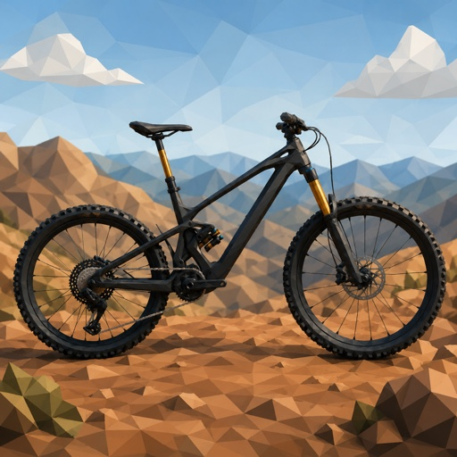

BikeSpec
Support
BikeSpec keeps your bike details, setups, service records and photos in one place, stored on your own device and in your own iCloud account.
Get in touch
Questions, bug reports and feature requests all welcome. I aim to reply within a few days.
To help me sort things out quickly, it's useful if you can include:
- Your device model and iOS version (Settings › General › About)
- The BikeSpec version number
- What you were doing when the problem happened, and what you expected instead
- A screenshot or screen recording, if the issue is something you can see
Common questions
Where is my data stored?
On your device, and in your personal iCloud account if you have iCloud enabled. There is no JZA Applications server holding your information, and I cannot see the contents of your iCloud. Full details are in the privacy policy.
Will my bikes appear on my other devices?
Yes, provided each device is signed in to the same Apple Account with iCloud turned on for BikeSpec. Syncing happens through iCloud, so a device needs a network connection to pick up changes made elsewhere.
Why can't I add another bike?
BikeSpec is free for two bikes in total, and every bike counts towards that, whether it's owned, on order, on your watchlist or sold. The one-time Unlimited Bikes purchase removes the limit. If you've bought it before, tap Restore Purchase on that screen.
Why am I not getting service reminders?
BikeSpec asks to send notifications the first time you log a service. If you said no then, tap the bell on the bike's Service card and turn them on there, or go to Settings › Notifications › BikeSpec. Reminders are only sent for bikes marked as owned, and only for jobs you're tracking. They arrive at 9 am on the day a job is due.
How do I delete my data?
Deleting an item in the app removes it. Deleting the app removes the copy held on that device; to clear the iCloud copy as well, use Settings › your name › iCloud › Manage Account Storage.
I have an idea for a feature
Send it through. BikeSpec is developed by one person, so I read everything that comes in.
Privacy
Read the BikeSpec privacy policy.